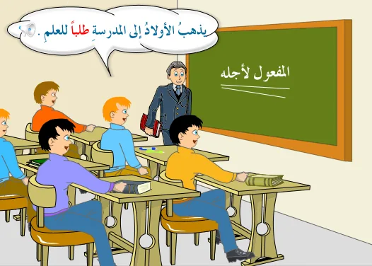
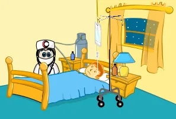
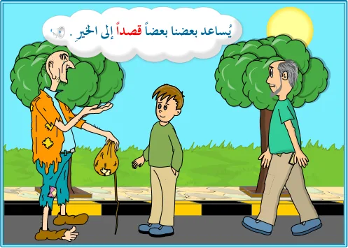

المفعول لأجله
الدرس 3 من 8 — التراكيب
أُلاحظ
أقرأ الأمثلة وأستمع إليها، وألاحظ الكلمات الملوّنة.
- يَذْهَبُ الْأَوْلَادُ إِلَى الْمَدْرَسَةِ طَلَبًا لِلْعِلْمِ.
- شَرِبَ الْمَرِيضُ الدَّوَاءَ خَوْفَ الْمَرَضِ.
- يُسَاعِدُ بَعْضُنَا بَعْضًا قَصْدًا إِلَى الْخَيْرِ.
أستنتج
المفعول لأجلهاسمٌ منصوب يُؤتى به لبيان سبب حدوث الفعل الذي قبله، ويكون جواباً عن سؤالٍ يبدأ بـ«لماذا». والمفعول لأجله منصوبٌ دائماً.
منصوباضغط على الكلمة الملوّنة لترى إعرابها، وعلى 🔊 لتستمع.

يَذْهَبُ الْأَوْلَادُ إِلَى الْمَدْرَسَةِ طَلَبًا لِلْعِلْمِ.
لماذا يذهب الأولاد إلى المدرسة؟ الجواب: طلباً للعلم. فكلمة «طلباً» بيّنت سبب الذهاب.
يأتي المفعول لأجله
- مضافاً أي مضافاً إلى اسمٍ بعده.

شَرِبَ الْمَرِيضُ الدَّوَاءَ خَوْفَ الْمَرَضِ. - غيرَ مضاف أي غير مضافٍ إلى اسمٍ بعده.

يُسَاعِدُ بَعْضُنَا بَعْضًا قَصْدًا إِلَى الْخَيْرِ.
أُطبّق
1المفعول لأجله في: «تَصَدَّقَ الرَّجُلُ رَغْبَةً فِي الْأَجْرِ»
2المفعول لأجله في: «صَمَتُّ احْتِرَامًا لِأَبِي»
3المفعول لأجله يُجيب عن سؤال:
4هل المفعول لأجله مضاف في: «هَرَبَ الْغَزَالُ خَوْفَ الْأَسَدِ»؟
5اختر الصحيح: «قُمْتُ … لِلضَّيْفِ»
6ما إعراب «طلباً» في: «يَذْهَبُ الْأَوْلَادُ إِلَى الْمَدْرَسَةِ طَلَبًا لِلْعِلْمِ.»؟
7ما إعراب «خوفَ» في: «شَرِبَ الْمَرِيضُ الدَّوَاءَ خَوْفَ الْمَرَضِ.»؟
إجابات صحيحة من أول محاولة:
أتمرّن أكثر
أستمع، ثمّ أرتّب الكلمات لأكوّن الجملة:
✓ أنهيتَ هذا الدرس
دروس العربية — للاستعمال التعليمي.